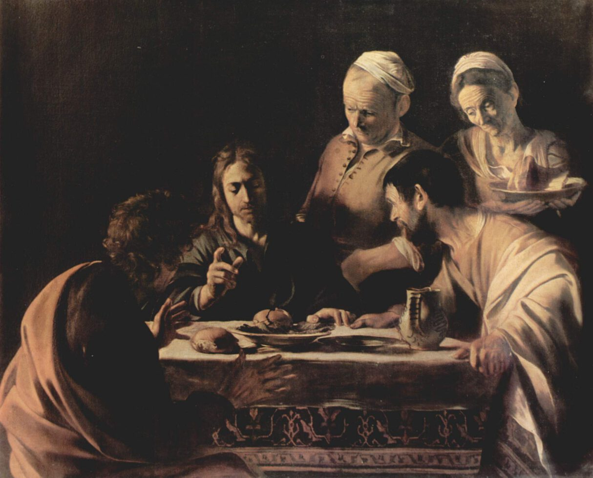

Caravaggio,1571 - 1610,Baroque,Italian,"Michelangelo Merisi (Michele Angelo Merigi or Amerighi) da Caravaggio (, US: , Italian pronunciation: [mikeˈlandʒelo meˈriːzi da (k)karaˈvaddʒo]; 28 September 1571 – 18 July 1610) was an Italian painter active in Rome, Naples, Malta, and Sicily from the early 1590s to 1610. His paintings combine a realistic observation of the human state, both physical and emotional, with a dramatic use of lighting, which had a formative influence on Baroque painting.Caravaggio employed close physical observation with a dramatic use of chiaroscuro that came to be known as tenebrism. He made the technique a dominant stylistic element, darkening shadows and transfixing subjects in bright shafts of light. Caravaggio vividly expressed crucial moments and scenes, often featuring violent struggles, torture and death. He worked rapidly, with live models, preferring to forgo drawings and work directly onto the canvas. His influence on the new Baroque style that emerged from Mannerism was profound. It can be seen directly or indirectly in the work of Peter Paul Rubens, Jusepe de Ribera, Gian Lorenzo Bernini, and Rembrandt, and artists in the following generation heavily under his influence were called the ""Caravaggisti"" or ""Caravagesques"", as well as tenebrists or tenebrosi (""shadowists"").",http://en.wikipedia.org/wiki/Caravaggio,55
